The bathroom is usually the last room anyone thinks to decorate for Christmas.
It is also one of the easiest, since a small space needs only a few well-chosen pieces to feel completely transformed.
A wreath on the mirror, a tray of mini trees by the sink, a soap dispenser with some personality — none of it takes a weekend, and none of it has to compete with a tub or a shower that still needs to work like normal the next morning.
This roundup leans on the same handful of ideas again and again: garland across a mirror, a tray of candles, a tree sized for a counter, because those are the moves that hold up in a room this size.
What changes is the styling, the color, the texture, the one unexpected detail that makes a guest actually notice.
Here are 45 ways to bring the season into a bathroom, powder room included, without it ever feeling like too much.

1. Dress a Novelty Soap Dispenser in a Red Puffer Coat
A white dog-shaped soap dispenser wears a glossy red coat and hood here, standing next to a vase of frosted pine and red berries tied with a velvet bow.
A gold-framed mirror behind it reflects a wreath hung with a matching red bow.
One character piece like this is enough, since a second mascot nearby starts to compete with it.
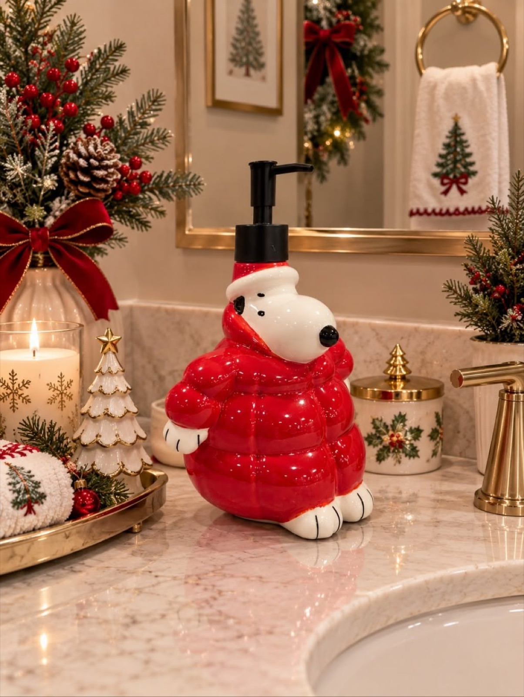
Glitzhome 2 Pcs 14 Inch Artificial Red Berry Christmas Wreaths
Shop on Amazon2. Wrap an Entire Mirror in a Pinecone and Berry Wreath
Most mirror wreaths sit as a swag at the top.
This one circles the whole frame, dense fresh greenery studded with pinecones and clusters of red berries covering every inch of the black ring.
Bare bulb sconces on either side keep the finished look from feeling too formal, with a potted pine wrapped in twine on the counter below.
Build the wreath directly onto the mirror frame instead of hanging a separate one, so it reads as part of the mirror rather than an add-on.
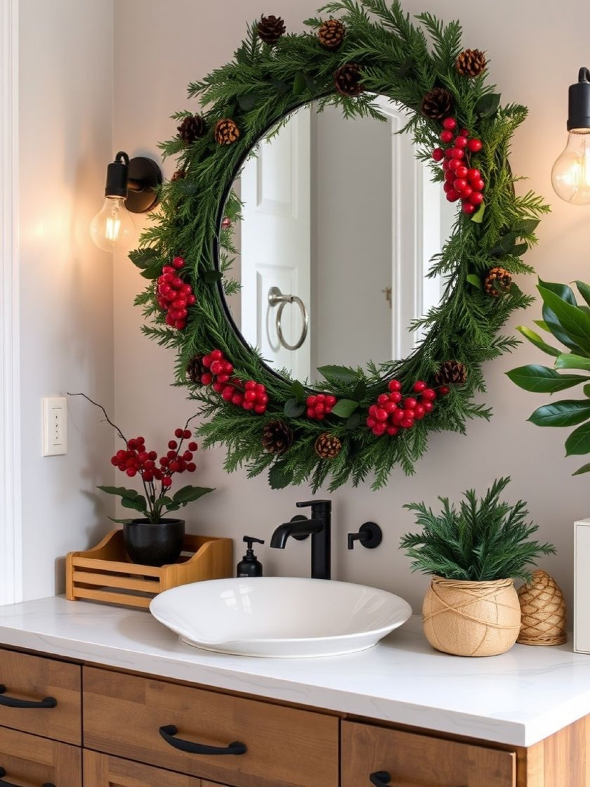
Glitzhome 2 Pcs 14 Inch Artificial Red Berry Christmas Wreaths
Shop on Amazon3. Pair a JOYFUL Sign with Fresh Greenery on Open Shelves
A single word on a shelf can carry a whole vignette.
A framed JOYFUL sign sits next to a bottle brush tree and a brass vase of greenery and red berries on the top shelf, with a wire basket, pinecones, and a dark candle below.
A wood sign reading Powder Room anchors the whole arrangement from underneath.
Keep the sign's message short, since a single word reads clearly from across a small room in a way a full sentence will not.
The rest of the shelf can stay simple once that one line of text does the talking.
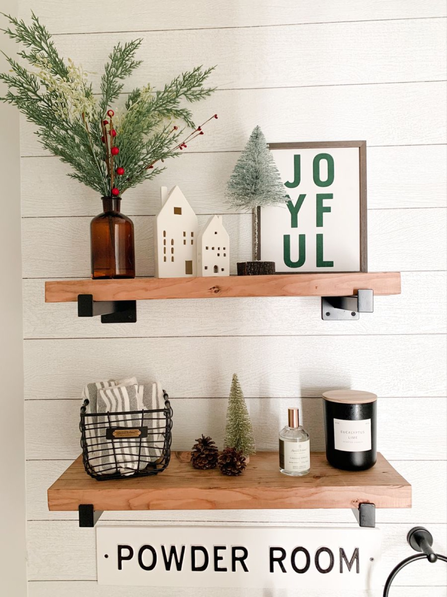
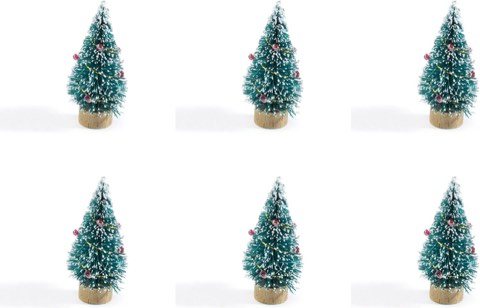
2 Inch Miniature Green Bottle Brush Christmas Trees on Wood Bases, 6 Trees
Shop on Amazon4. Hang Matching Wreaths from Both the Mirror and the Window
Repeating one element in two spots ties a small room together fast.
Identical berry wreaths with red bows hang from ribbon at both the mirror and the window here, over a black and white penny tile floor.
Hang both wreaths at the same height from their anchor point, since the repetition is what makes it feel planned rather than scattered.
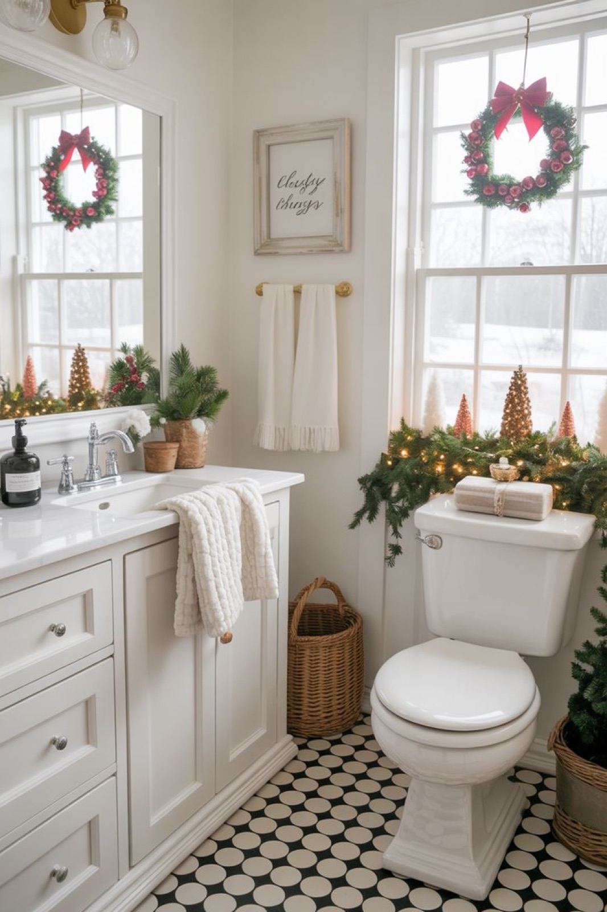
12 Inch Snowy Flocked Christmas Wreath with Bow, Red Berries and Pinecones
Shop on AmazonGlitzhome 2 Pcs 14 Inch Artificial Red Berry Christmas Wreaths
Shop on Amazon5. Fill a Vintage Pitcher with Fresh Cedar on a Stool
A plain enamel pitcher does more here than any vase from a shop.
Fresh cedar sprigs fill it, tied at the handle with a single red ribbon, set on a rustic wood stool beside an antique pedestal sink.
A red and white striped towel and a few loose pinecones finish the scene, under a botanical print in a reclaimed wood frame.
Let the greenery lean to one side instead of standing perfectly upright in the pitcher, so it reads as just-cut rather than arranged.
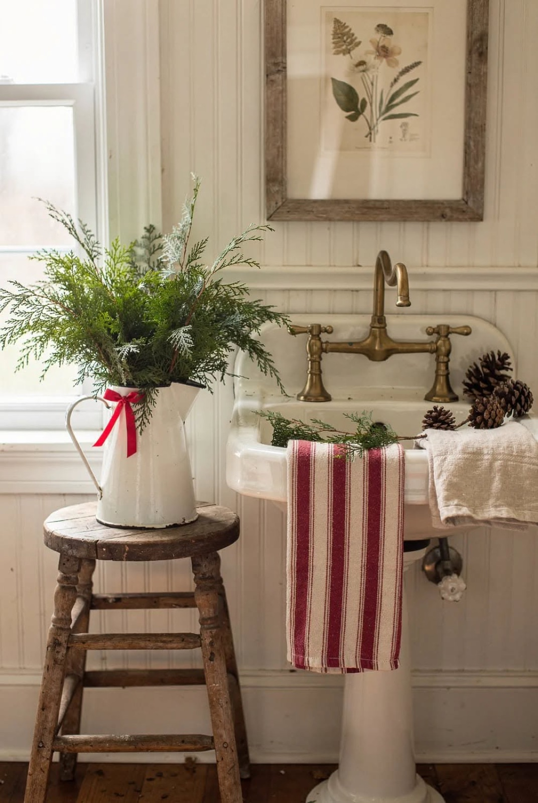

Topotdor Artificial Christmas Swag with Frosted Pine Branches, 23.6 Inch
Shop on Amazon6. Top a Mirror with Garland and Ornaments Over a Shiplap Vanity
White shiplap walls give this garland something clean to stand out against.
It drapes across the top of a wood-framed mirror with red amaryllis blooms and berries tucked in, hanging over a dark wood vanity.
Textured bark-look trees sit in a wood tray nearby with a tiny gnome figurine, and a black and white striped towel hangs within reach.
Let the garland sag naturally in the middle instead of pulling it taut corner to corner.
That gentle dip is what keeps the whole swag from looking stiff against the flat white planks.
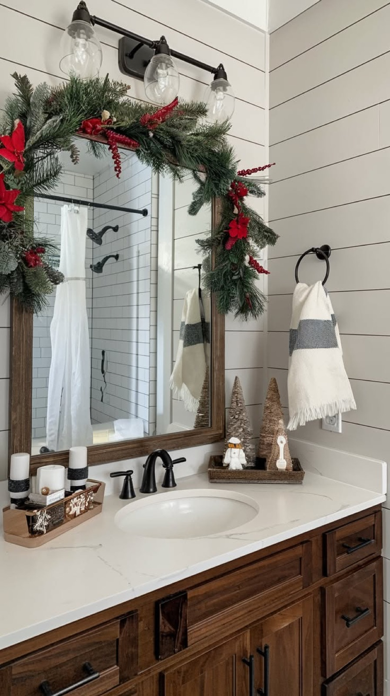
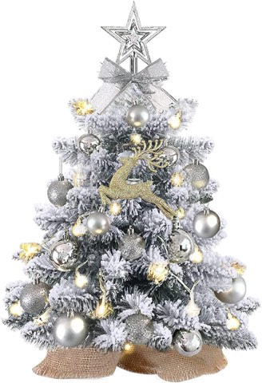
Mini Christmas Tree with Lights, 24 Inch Snow Flocked Pre-Lit Tabletop Tree
Shop on Amazon7. Tie Plaid Bows Around Stacked Toilet Paper Rolls
This is one of the smallest ideas on this list and also one of the easiest to copy exactly.
Three rolls are stacked here, each wrapped in its own red and green plaid ribbon bow, next to a small tree hung with red ornaments.
Tie each bow a little differently, since identical bows start to look manufactured instead of handmade.
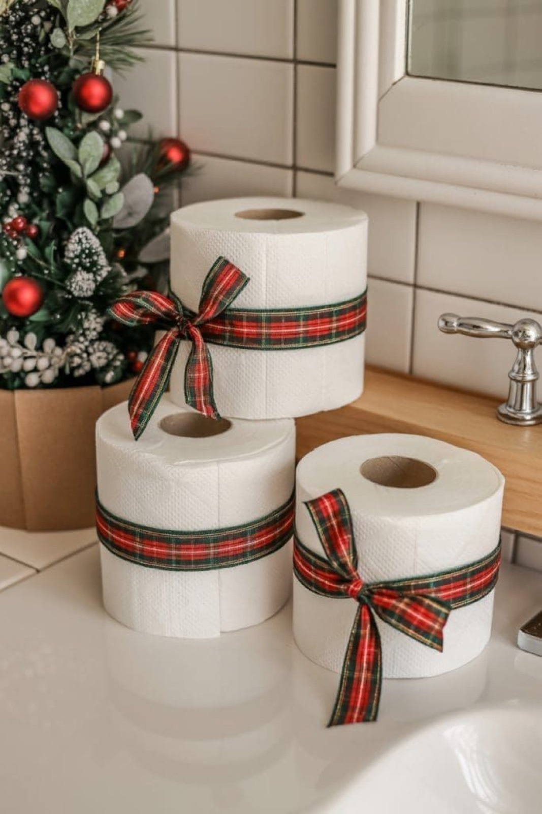

8. Style a Toilet Tank Tray with a Mini Tree and Candle
The top of a toilet tank is easy to forget and surprisingly easy to style.
A wood tray holds a small flocked tree, a lit pillar candle, a tiny ceramic house, and a few pinecones and red berries here, under a framed botanical print.
A sage green vanity and a woven basket of extra toilet paper round out the corner.
Keep the tray's contents low enough that the toilet lid still opens and closes without knocking anything over.
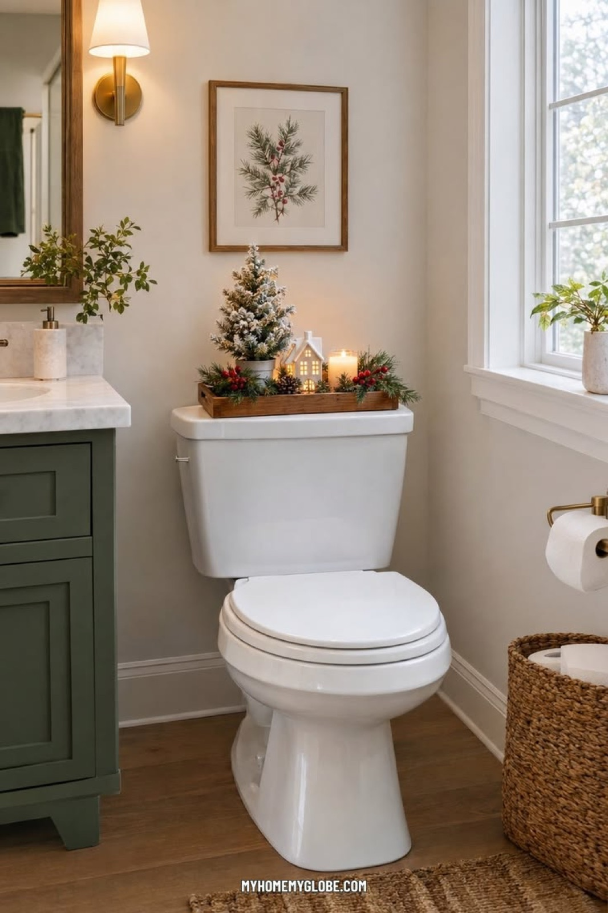
Rae Dunn Toilet Tank Tray, Decorative Wooden Over-Toilet Organizer
Shop on AmazonInweder Wooden Pillar Candle Holders, Rustic White, Set of 3
Shop on Amazon9. Go Full Glam with Gold Ornaments and a Lit Tree
Gold does not have to mean subtle.
A tree covered entirely in gold and white ball ornaments glows in the mirror's reflection here, framed by a crystal sconce and an ornate gold mirror.
White marble bath accessories with gold flecks sit on a mirrored gold tray, with a sequined towel on the bar and a small gift of soaps on a gold dish.
Match the metal finish across every accessory, from the faucet to the tray to the mirror frame.
One mismatched finish is enough to break the whole effect, so it pays to check every surface before calling it done.
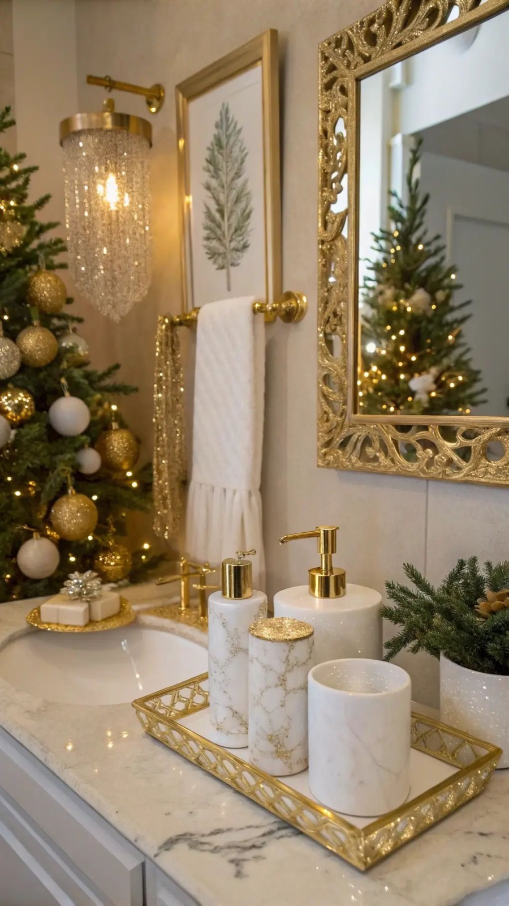
Mini Christmas Tree with Lights, 24 Inch Snow Flocked Pre-Lit Tabletop Tree
Shop on Amazon10. Pick a Woodland Print Shower Curtain Over Classic Plaid
Plaid is not the only way into a Christmas bathroom.
A cream curtain printed with deer, bear, and fox silhouettes alongside red and brown florals hangs here, paired with red and green striped towels and matching plaid bath mats.
Choose towels in one solid color from the print rather than another pattern, which keeps the curtain as the clear focal point.
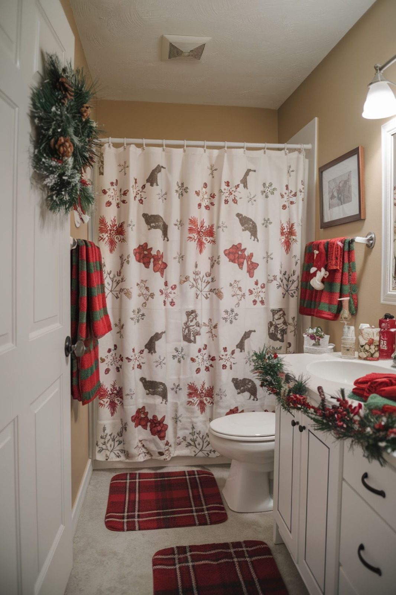
11. Wrap a Towel Stack Like an Actual Gift
A ribbon changes how a stack of towels reads completely.
White towels are folded and tied here with a red satin bow, sitting on a reclaimed wood shelf next to a burlap-wrapped mini pine and a jar of pinecones and cinnamon sticks.
Fairy lights trail loosely along the shelf's edge.
Tie the bow off-center rather than dead center on the stack, so it looks more like a real gift than packaging.
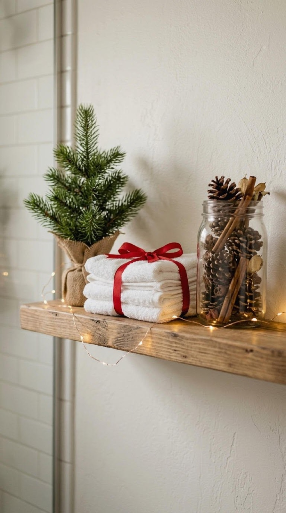
Red Velvet Ribbon for Gift Wrapping, 4 Rolls x 10 Yards
Shop on Amazon12. Mount a Sculptural White Tree Instead of a Flat Wreath
This is not a tree in a pot. It is a carved piece mounted flat against the wall.
A white ceramic tree sculpture hangs in the corner above the tub here, strung with red and green ball ornaments wired directly onto its branches.
Garland with twinkle lights runs along the tub's rim below it, with embroidered tree-motif towels on the bar and a faux fur rug underfoot.
Space the hung ornaments unevenly across the branches rather than symmetrically.
It keeps the piece from looking too stiff for something that is supposed to read as handmade.
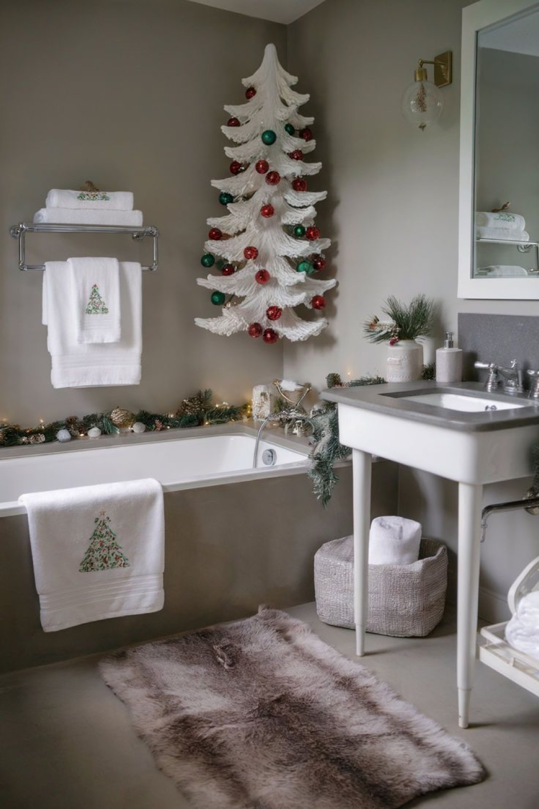
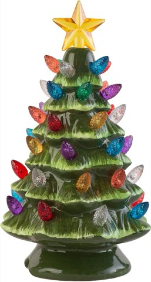
Small Vintage Ceramic Christmas Tree with Multi-Color Lights, 6.75 Inch
Shop on AmazonInweder Wooden Pillar Candle Holders, Rustic White, Set of 3
Shop on Amazon13. Hang a Flocked Wreath with a Plaid Bow Over the Mirror
Snow does not have to be real to set a mood.
A heavily flocked wreath hangs over the mirror here, silver ball ornaments and a red plaid bow standing out against the white, over gray floral wallpaper.
A snowy tabletop village with a red-roofed house sits on the counter, and a plush red robe hangs on a hook beside a woven basket.
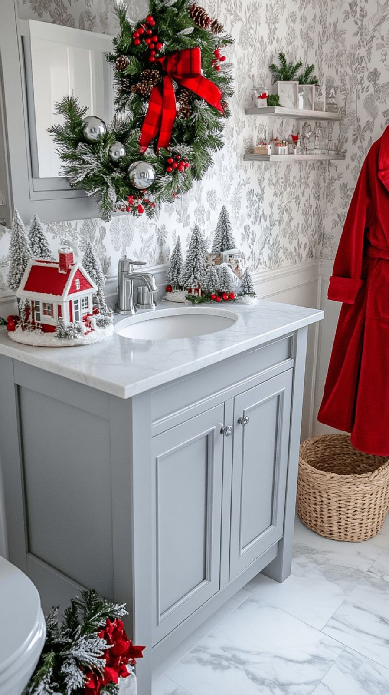
Briful 24 Inch White Snow Flocked Christmas Wreath with Ornaments
Shop on Amazon14. Line Up Red and Green Snowflake Soap Dispensers
A matched pair of dispensers does more color work than almost any other single swap.
One red and one green glass bottle, both printed with white snowflakes, sit beside a potted poinsettia and a red glass votive cut with a tiny tree pattern.
A jar of candy canes and plain white towels keep the rest of the counter simple.
Buy the dispensers as a matched set rather than mixing brands, since the identical snowflake pattern is what makes the pair read as intentional.
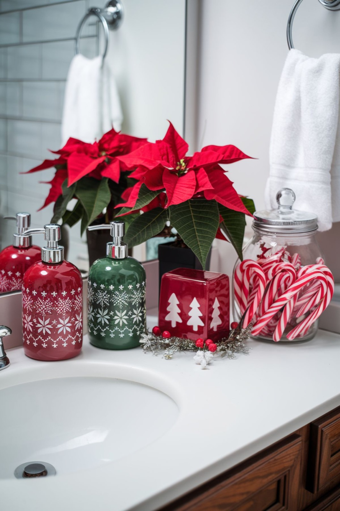
Nearly Natural 19 Inch Red Artificial Christmas Poinsettia in Wrapped Planter
Shop on AmazonHexagram Christmas Soap Dispenser, Red and White Snowflake Glass
Shop on Amazon15. Swag a Round Mirror with a Burlap Bow and Berries
Burlap keeps a berry garland from reading too formal.
A swag of pine and clustered red berries drapes across the top of a round black mirror here, tied with a wide burlap bow, over a dark wood vessel sink.
A small wood crate shelf nearby holds jars of pinecones and a tiny deer figurine, with mercury glass trees finishing the counter.
Choose a bow with a looser, less structured shape, since a crisp, symmetrical bow fights with the rustic burlap texture.
The looser the knot, the more at home it feels against raw wood and dark stone.
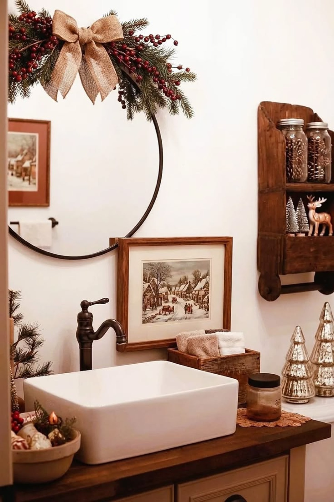
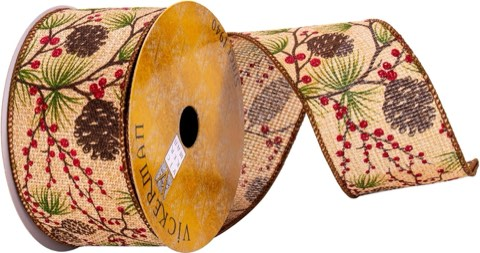
Vickerman Burlap Pinecone, Glitter, and Red Berry Ribbon, 2.5 Inch x 10 Yards
Shop on Amazon4.2 Ft Christmas Mirror Garland with Lights and Pinecones
Shop on Amazon16. Mix Tree Sizes and Finishes on a Shiplap Vanity
No two trees on this counter match, and that is exactly the point.
A lit tree, a plain green one, and a flocked one in varying heights sit on a black vanity against white shiplap, under a round black mirror swagged in a small wreath.
Group the trees by height, tallest in back, rather than lining them up in a row, so the cluster reads as a little forest instead of a product shelf.
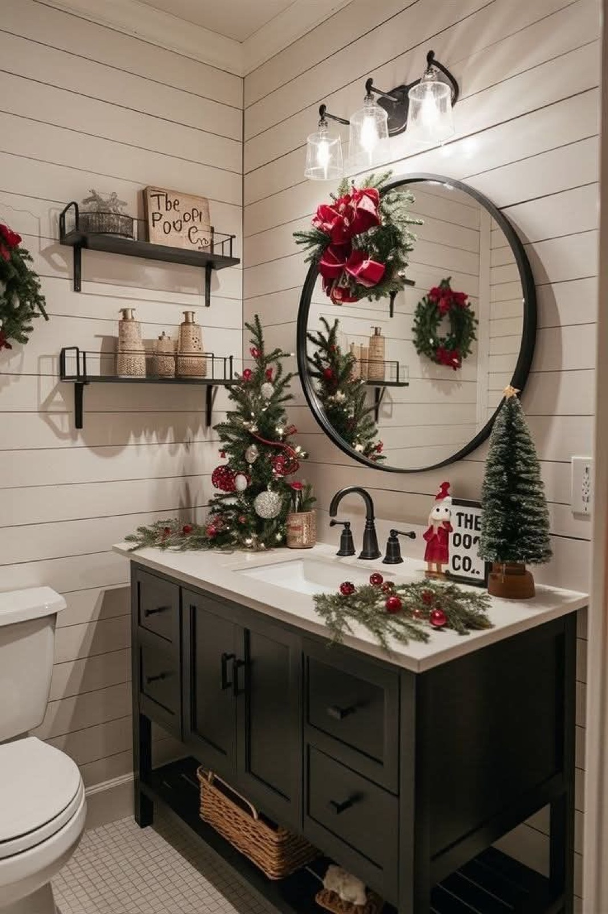
2 Inch Miniature Green Bottle Brush Christmas Trees on Wood Bases, 6 Trees
Shop on AmazonMTLEE 15 Sets Christmas Fillable Glass Jar Ornaments
Shop on Amazon17. Combine Carved Trees with Framed Winter Art
A piece of art on a shelf does something a figurine alone cannot.
Two sage green carved cone trees stand beside a framed watercolor winter landscape here, with a flocked potted tree completing the top shelf.
The shelf below holds white ceramic lit houses and a Christmas Prayer plaque, with small potted pines on the counter and a candle on the toilet tank.
Lean the framed art against the wall rather than hanging it, which is easier to update each season and adds a slightly collected feel.
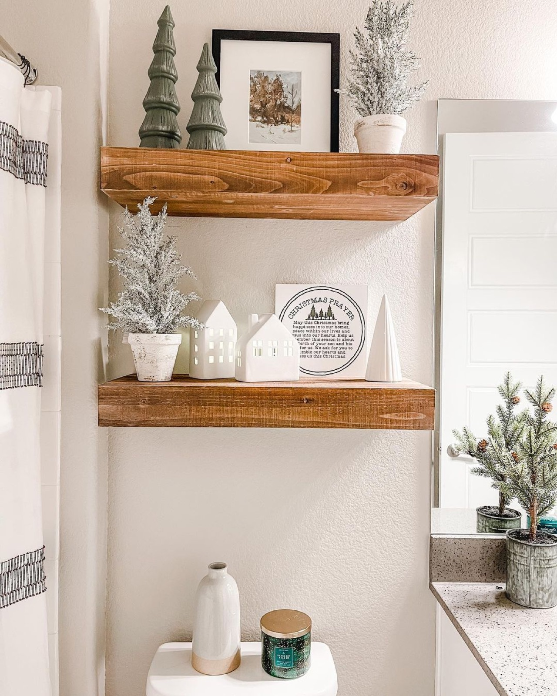
2 Inch Miniature Green Bottle Brush Christmas Trees on Wood Bases, 6 Trees
Shop on AmazonMerry Christmas Hanging Wooden Sign, Farmhouse Holiday Wall Decor
Shop on Amazon18. Pair a Snowman Soap Dispenser with Embroidered Towels
This combination works in nearly any bathroom, since it does not depend on cabinet color or fixtures to look good.
A knit snowman dispenser in a plaid scarf stands on white marble here, next to an embroidered snowman hand towel on a brass ring and rolled red terrycloth towels.
A bowl of pinecones and a small potted pine sit by the window.
Roll the hand towels instead of folding them flat.
That one swap gives the counter a spa-like, intentional look rather than a pile of fabric.
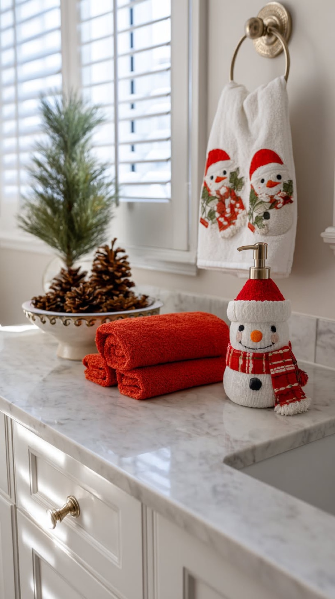
Serafina Home Embroidered Snowman Hand Towels, Set of 2
Shop on Amazon19. Hang Gold Bells from a Garland-Wrapped Round Mirror
Bells add sound as well as sparkle to a garland.
Small gold bells and fairy lights are woven through flocked pine draped around a round gold mirror here, with rose gold ball ornaments piled in a pedestal glass bowl nearby.
Space the bells unevenly along the garland rather than at matched intervals, so a few hang lower and catch more light.
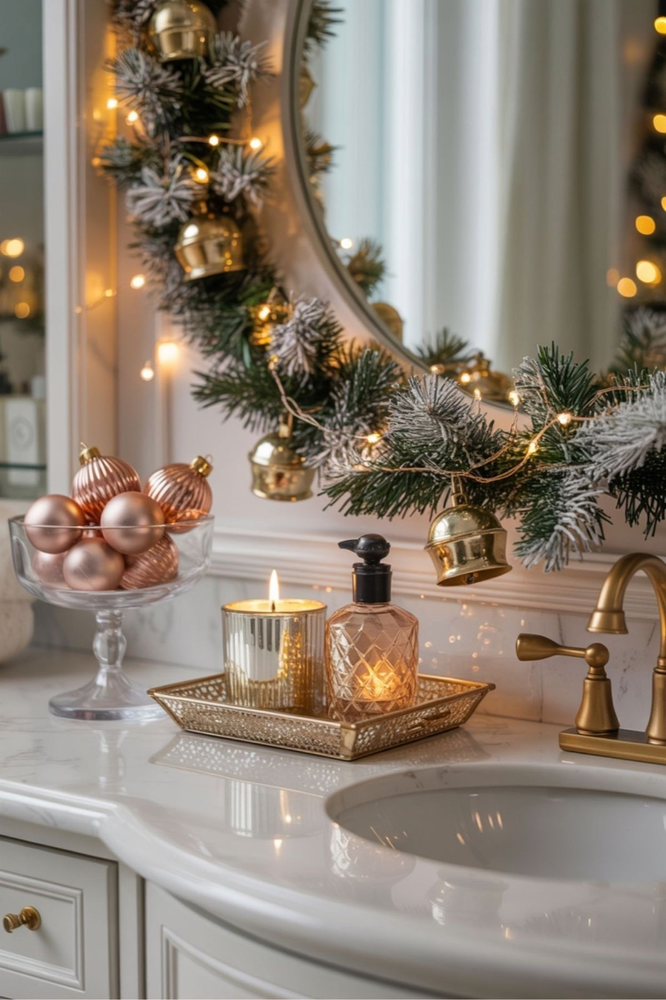
4.2 Ft Christmas Mirror Garland with Lights and Pinecones
Shop on Amazon
20. Build a Vanity Display Around a Reclaimed Wood Counter
A worn wood surface already looks collected before anything gets added to it.
A black-top snowman figurine and red vessel sink sit on reclaimed planks here, with red, black, and cream plaid towels on the ring and garland strung with lights over the mirror and window.
An open wood shelf unit nearby holds mini potted trees and candy-striped glass jars.
Let the wood's natural wear show rather than covering most of the surface, since the texture is doing real styling work on its own.
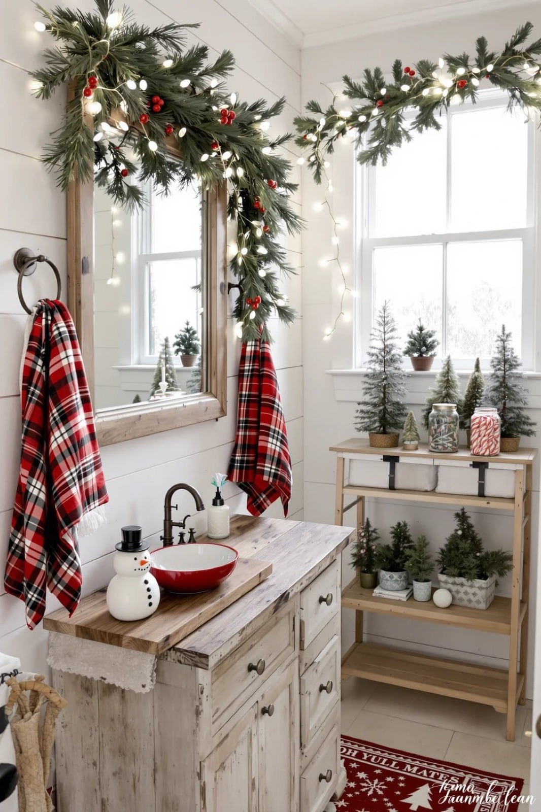
FUOYLOO Ceramic Snowman Tumbler Figurine Set, 2 Pcs
Shop on Amazon21. Stack Coffee Table Books Into a Shelf Display
Books add height to a shelf in a way most decor pieces cannot.
A stack of design books anchors the middle shelf here, with bottle brush trees, white ceramic houses, and a wood bead garland arranged around them.
A framed Merry and Bright sign with a floral border tops the whole display, and a plain evergreen wreath hangs on the wall below.
Stack the books unevenly rather than by size.
A slightly staggered stack photographs better than a perfectly graduated one.
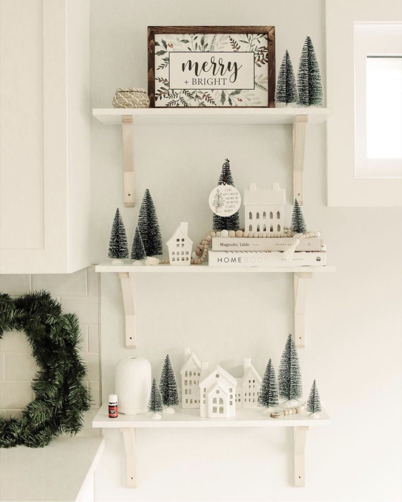
Merry Christmas Hanging Wooden Sign, Farmhouse Holiday Wall Decor
Shop on AmazonJETEHO Ceramic Christmas Village, 5 White Houses and 9 Trees
Shop on Amazon22. Dress a Double Vanity with Gold Ornament Towels
A double vanity gives you two full towel displays to repeat the same idea across.
White towels embroidered with gold ornament and tree motifs hang on both sides here, with gold taper candlesticks and a bouquet of white blooms centered between the two sinks.
Hang matching towels on every bar in a double vanity, since mismatched pairs read as unfinished in a way a single-sink vanity would not.
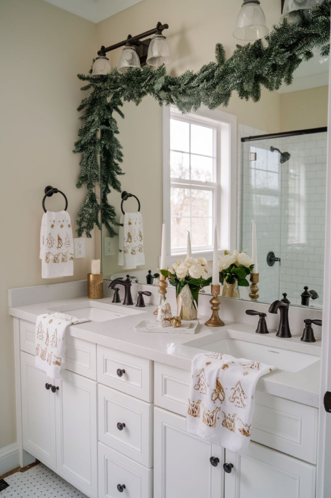
Nearly Natural 19 Inch Red Artificial Christmas Poinsettia in Wrapped Planter
Shop on AmazonSerafina Home Embroidered Snowman Hand Towels, Set of 2
Shop on Amazon23. Set Two Mismatched Soap Dispensers Side by Side
These two bottles do not match at all, and that contrast is the whole appeal.
A detailed ceramic nutcracker dispenser with a gold pump stands next to a plain white bottle printed simply with MERRY and a small tree.
A floral and snowflake shower curtain is visible, softly out of focus, behind them.
Pair one highly detailed piece with one plain one rather than two busy designs, since the simple bottle gives the eye somewhere to rest.
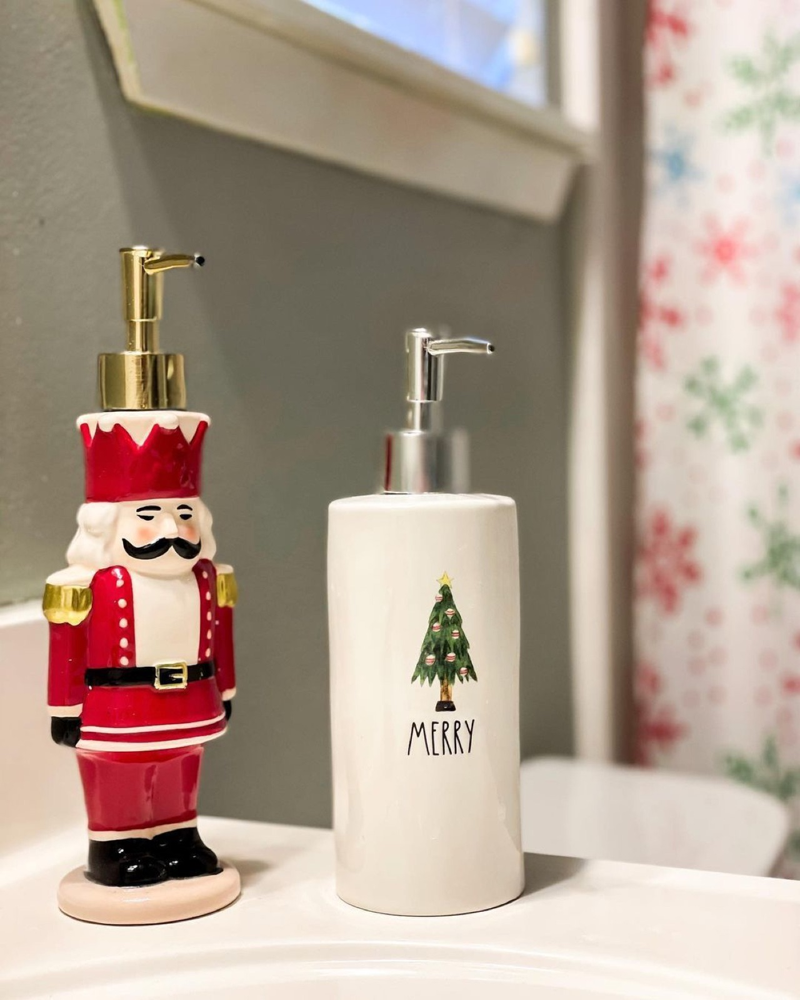

24. Hang a Lit Berry Garland Along the Shower Curtain Rod
The rod itself rarely gets decorated, which is exactly why it stands out when it does.
A garland strung with red berries and tiny lights runs the length of a black rod here, above a red, black, and cream plaid curtain.
Red and green towels sit folded on the toilet tank, with a red and green striped jute rug finishing the floor.
Let the garland hang slightly looser than the curtain rings beneath it, so it reads as a separate layer rather than part of the hardware.
That small gap of air between garland and rings is what sells the illusion.
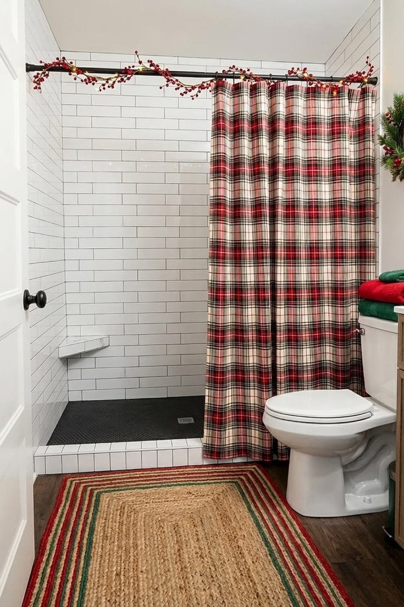
4.2 Ft Christmas Mirror Garland with Lights and Pinecones
Shop on Amazon25. Outline an Entire Mirror in String Lights
This is less about the wreath and more about the glow around it.
Warm string lights trace the full oval outline of a mirror here, with a plain pine wreath hung in the center on a single red ribbon.
Polka dot towels, a wood tray with a lit mini tree and lantern-style candle holder on the toilet tank, and dark floating shelves with plants and candles fill out the small space.
Run the lights around the mirror's frame in one continuous strand rather than looping them loosely, since the clean outline is what makes it look finished after dark.
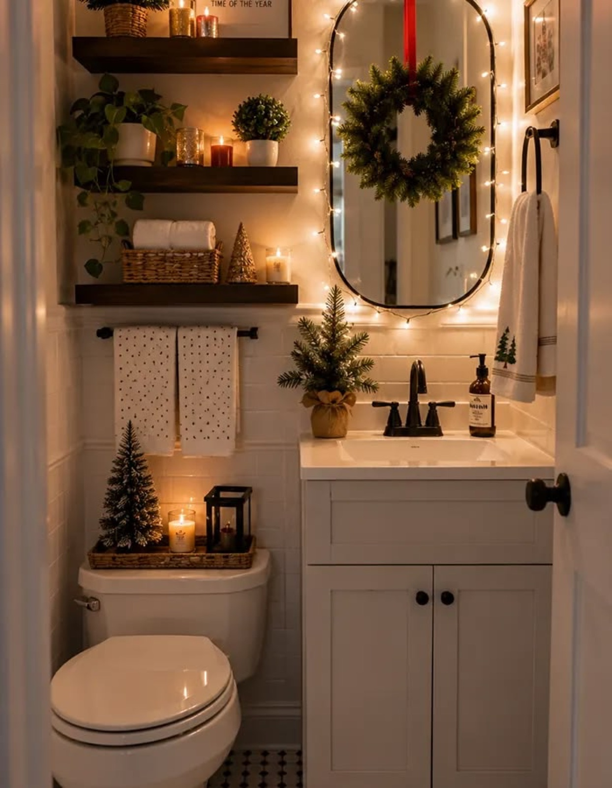
Glitzhome 2 Pcs 14 Inch Artificial Red Berry Christmas Wreaths
Shop on Amazon
26. Layer Cone Trees and Village Houses Above the Toilet
A shelf above the toilet gets used constantly in a small bathroom, and this one earns its spot.
Red and white sweater-pattern cone trees sit on the top shelf here, with white ceramic village houses with red roofs on the shelf below.
A white bare-branch tree strung with red and white balls stands on the black vanity counter, with Nordic-print towels draped over the tank.
Keep the shelf brackets simple and white so the trees and houses stay the visual focus, not the hardware holding them.
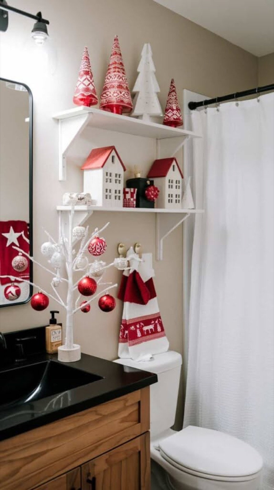
JETEHO Ceramic Christmas Village, 5 White Houses and 9 Trees
Shop on Amazon27. Group a Candlelit Tray with Tiny Lit Trees
A grouping like this works because everything on the tray is a different height.
Two mini pine trees wrapped in fairy lights stand behind a lit candle and a glowing ceramic house here, all gathered on a round woven tray with a few red berry sprigs.
Hanging rope shelves nearby hold a wood reindeer cutout and a small printed tin.
Turn the ceramic house so its lit windows face outward, toward the room, not toward the mirror.
That small adjustment is what makes the glow visible from the doorway instead of just in the reflection.
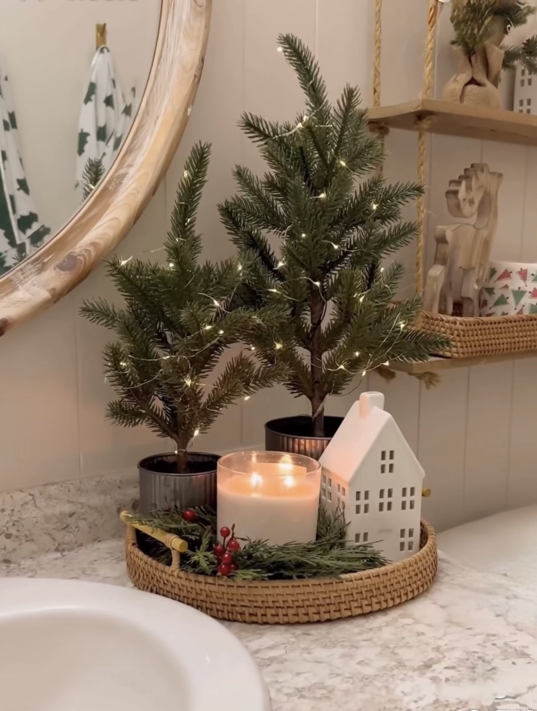
Mini Christmas Tree with Lights, 24 Inch Snow Flocked Pre-Lit Tabletop Tree
Shop on Amazon28. Tuck a Rust-Toned Ribbon into a Mirror Garland
Most garland bows go red or gold. This one goes a shade warmer.
A short swag of evergreen tops a black mirror here, tied with a rust-colored ribbon, flanked by brass sconces and white shade lamps.
Try a mustard or rust ribbon in place of the expected red once, since it softens the whole look without losing the color entirely.
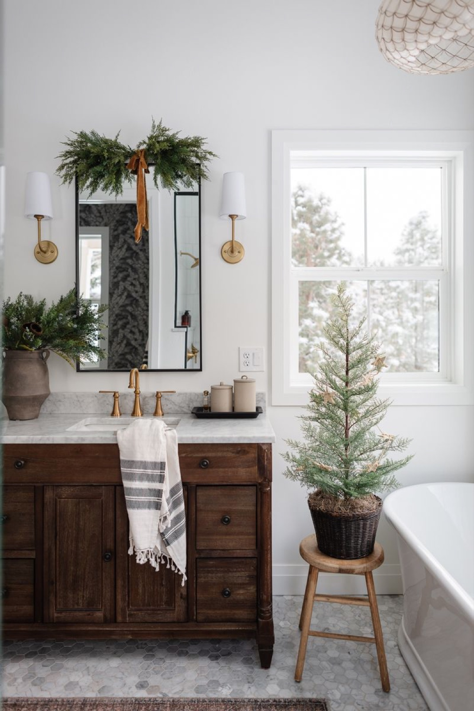
4.2 Ft Christmas Mirror Garland with Lights and Pinecones
Shop on AmazonMini Christmas Tree with Lights, 24 Inch Snow Flocked Pre-Lit Tabletop Tree
Shop on Amazon29. Add a Santa Figurine to a Black Wire Shelf
A wire shelf with a built-in towel bar does two jobs in the space of one.
A Santa figurine and a flocked tree sit in the basket here, with a red and white striped canister, under a round black mirror and black wall sconces.
Red cloth towels hang from the bar underneath, matched to the red accents up top.
Choose a shelf style with an attached bar rather than adding a separate towel ring, which keeps the whole corner visually contained.
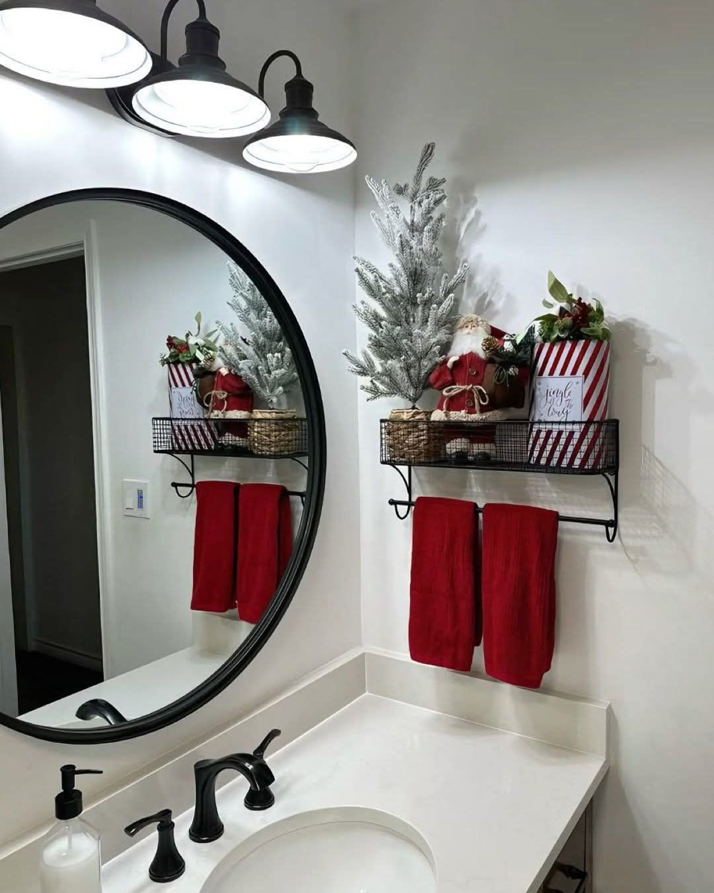
Ysqool 2 Pcs Vintage Resin Santa Claus Figurines
Shop on AmazonSerafina Home Embroidered Snowman Hand Towels, Set of 2
Shop on Amazon30. Drape a Garland Heavy with Ornaments Over a Dark Mirror
Dark wood gives ornaments somewhere to really stand out.
Red and silver ball ornaments are threaded through pine and berries along the top of an espresso-framed mirror here, with matching sconces on either side.
A glass apothecary jar of loose red ornaments and a red poinsettia in a glass vase finish the marble counter.
Let a few ornaments hang slightly below the garland's edge on their own cords.
That added depth keeps everything from sitting flush against the mirror in one flat plane.
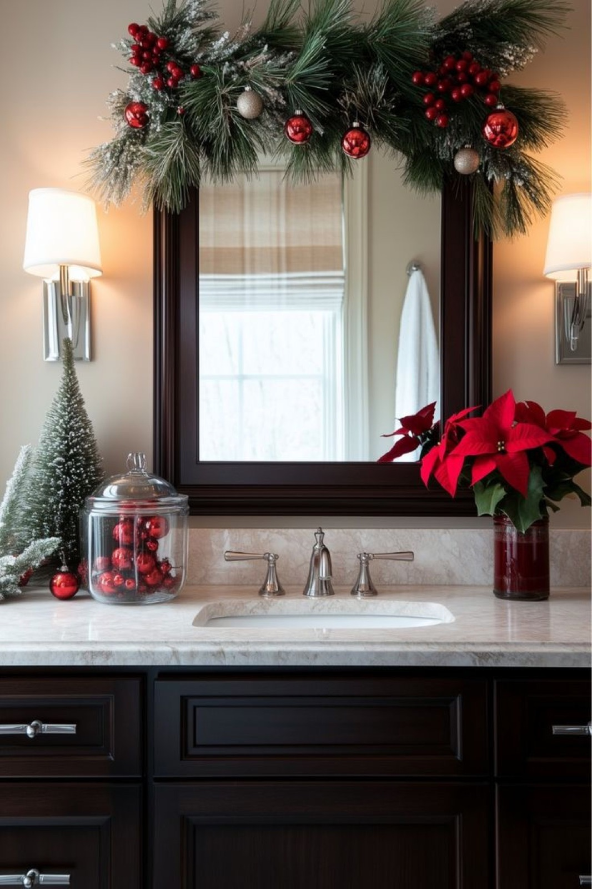
4.2 Ft Christmas Mirror Garland with Lights and Pinecones
Shop on AmazonNearly Natural 19 Inch Red Artificial Christmas Poinsettia in Wrapped Planter
Shop on Amazon31. Add a Framed Reindeer Print to Floating Shelves
A single framed piece can anchor two shelves' worth of smaller objects.
A vintage-style reindeer print in a wood frame sits on the top shelf here, next to a white ceramic house and a potted pine, mini trees lined up alongside it.
The shelf below holds more mini trees, a second ceramic house, and small canisters, over a plaid shower curtain.
Angle the framed print slightly rather than setting it perfectly flat against the wall, since a crooked lean keeps a small vignette from looking too staged.
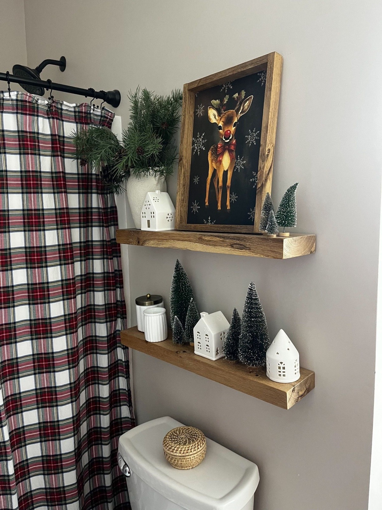
JETEHO Ceramic Christmas Village, 5 White Houses and 9 Trees
Shop on Amazon2 Inch Miniature Green Bottle Brush Christmas Trees on Wood Bases, 6 Trees
Shop on Amazon32. Pair a Red Merry Christmas Sign with Black Shelves
Black shelves make everything sitting on them read a little more graphic.
A red sign reading Merry Christmas in white script sits on the lower shelf here, next to a flocked mini tree and a white ceramic house.
The shelf above holds a Farm Fresh Christmas Trees sign and a white deer figurine, with a woven basket of toilet paper below.
Keep the shelves themselves black or another dark neutral, since that is what lets the white houses and red sign read clearly against the wall.
Merry Christmas Hanging Wooden Sign, Farmhouse Holiday Wall Decor
Shop on Amazon2 Inch Miniature Green Bottle Brush Christmas Trees on Wood Bases, 6 Trees
Shop on Amazon33. Hang a Greenery Swag from a Row of Coat Hooks
A hook rail does not have to hold only towels and robes.
A frosted greenery swag with white snowflakes and red berries hangs from one hook here, beside a tasseled gray towel and a Merry Christmas sign with its own small pine sprig.
A white candlestick and a soap pump finish the counter below.
Use just one hook for the swag and leave the rest for actual towels.
Filling every hook with decor is the fastest way to make the whole rail unusable.
Dseap Wall Mounted Coat Rack, 5 Tri Hooks, Black
Shop on AmazonTopotdor Artificial Christmas Swag with Frosted Pine Branches, 23.6 Inch
Shop on Amazon34. Drape a Snow-Flocked Garland Down One Side of a Mirror
This garland does not go across the top. It falls straight down one corner instead.
Heavily flocked greenery with pinecones cascades over a white towel on a black ring here, hung from the edge of a plain mirror.
Three white pillar candles of different heights sit in a wood dough bowl with more pinecones on the counter below.
Let the garland's lowest point reach just past the towel ring, since stopping it too high makes the drape look accidental rather than intentional.
National Tree Company 9ft Pre-Lit Frosted Berry Christmas Garland
Shop on AmazonInweder Wooden Pillar Candle Holders, Rustic White, Set of 3
Shop on Amazon35. Set a Flocked Tabletop Tree Beside Gift-Wrapped Towels
A small tree and a wrapped towel stack make a matching pair when they share a color palette.
A flocked tree trimmed in red, green, and gold with a gold star topper sits in a burlap sack tied with gingham here, next to white towels tied with a red ribbon and a pine sprig.
An amber glass Holiday Spice Soap bottle completes the counter, against white subway tile.
Pick a tree with ornaments in the same two or three colors as the ribbon on the towels, since that matching palette is what ties the two pieces together.
Mini Christmas Tree with Lights, 24 Inch Snow Flocked Pre-Lit Tabletop Tree
Shop on AmazonRed Velvet Ribbon for Gift Wrapping, 4 Rolls x 10 Yards
Shop on Amazon36. Mix Rainbow Bottle Brush Trees Across Two Shelves
Most bottle brush displays stick to green and white. This one does not.
Teal, pink, gold, and flocked trees stand together on these two wood shelves, next to an Oh Holy Night sign, a gold nutcracker figurine, and small white houses.
A checkered vase and a few disco-ball style ornaments add extra shine.
Pick one unexpected tree color, pink or teal, say, and repeat it at least twice across the display.
Repeating it is what makes the choice read as deliberate instead of a mistake.
Set of 3 Red and White Stripe Bottle Brush Christmas Trees, 10 Inch
Shop on Amazon37. Set a Berry Branch Vase Below the Medicine Cabinet
A tall arrangement works even in a narrow gap between the counter and a cabinet.
Sugared pink and cream berry branches fill a mason jar here, tied with a burlap bow, sitting in a wood tray on a white vanity below an open-shelf medicine cabinet.
A small planter of greenery sits on the toilet tank nearby, with a lit tree visible in the mirror's reflection.
Choose branches tall enough to clear the bottom edge of the cabinet above, since anything shorter looks like it is hiding under something.
Glitzhome 2 Pcs 14 Inch Artificial Red Berry Christmas Wreaths
Shop on Amazon38. Build a Candlelit Tray with Berries and String Lights
Tiny lights tucked into greenery do more after dark than any ornament could.
A tall vase of pine, eucalyptus, and red berries with lights woven through sits on a gold tray here, beside a candle, a small white ceramic tree, and a woven jar of cotton balls.
Red and white striped towels with a sprig of berries finish the counter.
Tuck the battery pack for any string lights behind the vase, not beside it, so the tray reads as effortlessly lit rather than wired.
Gold Mirrored Round Decorative Vanity Tray, 12.6 Inch
Shop on AmazonInweder Wooden Pillar Candle Holders, Rustic White, Set of 3
Shop on Amazon39. Add Minimalist Black Deer Figurines to a Flocked Tree
Not every accent next to a tree needs to be red or gold.
Two black wire deer figurines stand beside a small flocked, lit tree in a burlap base here, on a white hexagon-tile vanity with brass hardware.
A marble tray and a candle sit nearby, with the scene echoed in the mirror behind.
Choose figurines in one flat, matte color rather than metallic.
The contrast against the flocked white tree reads sharper that way than any metallic finish would.
Mini Christmas Tree with Lights, 24 Inch Snow Flocked Pre-Lit Tabletop Tree
Shop on AmazonInweder Wooden Pillar Candle Holders, Rustic White, Set of 3
Shop on Amazon40. Match a Sled Tray to a Pine Print Shower Curtain
Repeating the same motif between the counter and the curtain ties the whole room together.
A red metal sled holds lit mini trees, a snowman soap dispenser, and a red candle here, on a wood vanity beside a shower curtain printed all over with simple pine trees.
Pick a curtain print simple enough that it would work as a wrapping paper, since busy prints fight with everything else on the counter.
Forest Animal Silhouette Shower Curtain with Snap-In Liner, 60x72 Inch
Shop on AmazonGrace Home Rustic Wooden Sled with Hope Lettering, 16.5 Inch
Shop on Amazon41. Line Candles Along a Garden Tub for a Spa Feel
This is the one idea on this list built entirely around ambiance, not objects.
Rows of white taper candles in gold holders line the tub's ledge and mirror behind it here, with garland and red berries draped down the wall beside the tub.
A wood bath caddy spans the water, and rolled towels tied with red velvet ribbon sit at the tub's edge.
Use real candles only when the bath is actually in use, and swap in flameless versions the rest of the time for safety.
Inweder Wooden Pillar Candle Holders, Rustic White, Set of 3
Shop on AmazonSerafina Home Embroidered Snowman Hand Towels, Set of 2
Shop on Amazon42. Weave Lit Garland Across the Lowest of Three Shelves
Three shelves stacked this close together need one unifying element, not three separate displays.
Garland strung with fairy lights runs across just the bottom shelf here, under rolled towels, a brass soap pump, and a small candle jar.
The shelves above hold fresh greenery with red berries, rolled towels in a wire basket, and a wooden nutcracker figure, with a potted fern on the toilet tank.
Limit the lit garland to one shelf rather than draping it across all three.
That restraint is what reads as a deliberate accent instead of overkill.
4.2 Ft Christmas Mirror Garland with Lights and Pinecones
Shop on Amazon43. Repeat Garland and Poinsettias on a Second Vanity
The same formula that works once can work twice in a larger bathroom.
Garland drapes across the top of a long mirror here, with white poinsettias in a galvanized pot and brass candlesticks of different heights between the two sinks.
Gold-embroidered towels hang on both sides, over white penny tile floors.
4.2 Ft Christmas Mirror Garland with Lights and Pinecones
Shop on AmazonNearly Natural 19 Inch Red Artificial Christmas Poinsettia in Wrapped Planter
Shop on Amazon44. Set a Berry Vase on the Cabinet Above the Toilet
An over-the-toilet cabinet gets a lot more interesting with one tall vase on top.
A glass vase filled with red berry branches and a burlap bow sits there here, with frosted greenery tucked along the top edge of the cabinet.
A small succulent on the toilet tank and a wood tray underneath the vase round out the vignette.
Center the vase on the cabinet's width rather than pushing it to one side, so it looks balanced at a glance from the doorway.
Glitzhome 2 Pcs 14 Inch Artificial Red Berry Christmas Wreaths
Shop on Amazon45. Pair a Flocked Mini Tree with a Woven Soap Dispenser
Texture does more work in a small, neutral display like this one than color ever could.
A flocked mini tree sits in a jute-wrapped pot here, beside a soap pump wrapped in matching woven rope and a candle resting on a wood slice coaster.
A rolled white towel and a woven basket fill out a light wood tray, against plain beige square tile.
Match the woven texture across at least two objects, the soap bottle and a basket or tray.
Repeating that one material is what reads as a real choice rather than a coincidence.
Mini Christmas Tree with Lights, 24 Inch Snow Flocked Pre-Lit Tabletop Tree
Shop on AmazonInweder Wooden Pillar Candle Holders, Rustic White, Set of 3
Shop on AmazonStart Small and Build From There
Forty-five ideas is far more than any one bathroom needs.
Most of these rooms are working with a single mirror, a shelf or two, and a bit of counter space, so the real skill is picking two or three ideas that fit what is already there.
A garland across the mirror and a tray by the sink will carry most powder rooms on their own.
Save the bigger gestures, a full wreath wrap, a candlelit tub, for the bathroom guests actually spend time in.
Whatever you choose, keep it light enough to pack away in January without a second thought.
A bathroom only needs to feel festive for a season, not redecorated for good.